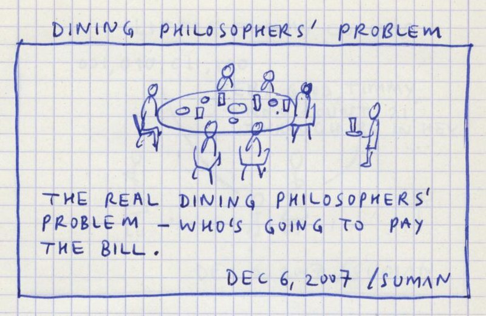
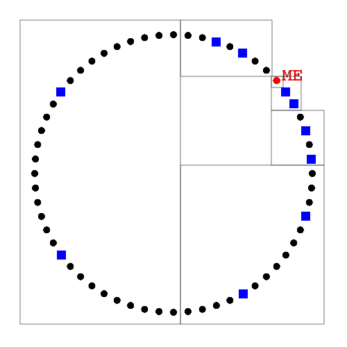
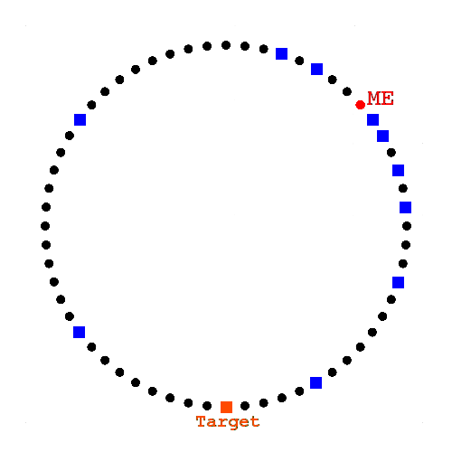
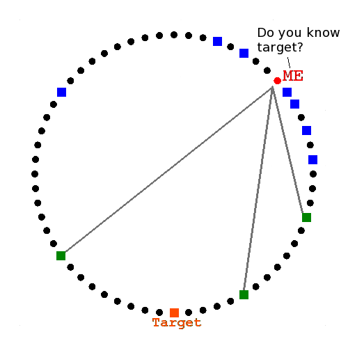
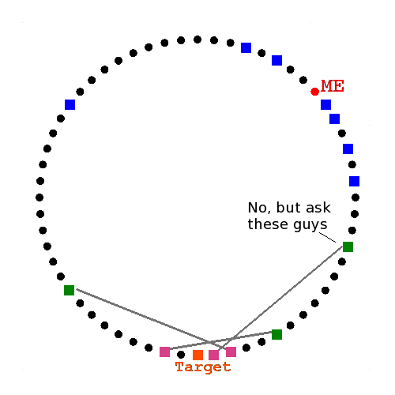
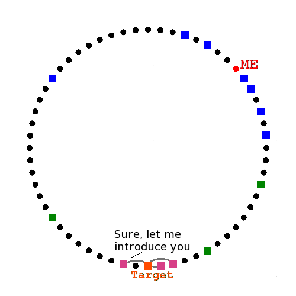

A distributed hash table (DHT) is a peer-to-peer key / value data store
How?
Core Concept #1
The Event Loop
(Based on real events - participants have been
replaced by unreasonably happy actors)
IMPORTANT!
PEP 315 states that callbacks are...
“[...] strictly serialized: one callback must finish
before the next one will be called. This is an important
guarantee: when two or more callbacks use or modify shared
state, each callback is guaranteed that while it is
running, the shared state isn't changed by another
callback.”
Hang on a minute..?
That doesn't sound very concurrent!

Concurrent tasks interfere with shared resources
Task A reads a record.
Task B reads a record.
Both A and B change the
retrieved data in different
ways.
Task B writes its changes.
Task A writes its changes.
Task A overwrites the
record containing task B's changes.
Act synchronously to avoid interference!
First do A, then B followed by
C (and so on).
Easy to understand and
deterministic.
What happens if A needs to wait
for something, for example, a reply from a machine on
the network?
The program waits until A's
network call completes.
It can't get on with other stuff while waiting for A. :-(
Welcome to the most important slide of this talk
The program does not wait for a
reply from network calls before continuing.
Programmers define callbacks to
be run when the result of a network call is
known.
In the meantime the program
continues to poll for and respond to other network
related I/O events.
Callbacks execute
during the iteration of the event loop
immediately after the expected network I/O
event is detected.
Confused..?
Don't be, its exactly how humans
think about concurrency.
We make plans: when the washing machine finishes, take
the clothes and hang them out to dry.
As humans we work on concurrent tasks (like preparing
breakfast) in a similar non-blocking manner.
asyncio avoids potentially confusing and
complicated “threaded” concurrency while
retaining the benefits of strictly sequential code.
Questions:
How are asynchronous concurrent
tasks created?
How do such tasks pause while
waiting for non-blocking network based I/O?
How are callbacks defined (to
handle the eventual result)?
You need to understand coroutines,
futures and tasks.
Core Concept #2
Coroutines
(Are FUN!)
Coroutines are generators
They may be suspended (yield
from)
They 'yield from' other
objects
At the end of the chain
is an object that returns a result or raises an
exception
@asyncio.coroutine
def handle_request(self, message, payload):
""" Handle an incoming HTTP request. """
response_code = 405 # Method Not Allowed
response_data = None
if message.method == 'POST':
try:
raw_data = yield from payload.read()
response_data = yield from self.process_data(raw_data)
response_code = 200 # OK
except Exception as ex:
# Log all errors
log.error(ex)
response_code = 500 # Internal Server Error
# etc...
return response
But what about callbacks?
How do I handle the result of a coroutine?
Core Concepts #3 & #4
Futures and Tasks
(Are also FUN!)
def handle_resolved_future(future):
"""
This function is a callback. Its only argument is the
resolved future whose result it logs.
"""
log.info(future.result())
# Instantiate the future we're going to use to represent the
# as-yet unknown result.
my_future = asyncio.Future()
# Add the callback to the list of things to do when the
# result is known (the future is resolved).
my_future.add_done_callback(handle_resolved_future)
(Time passes)
# in some coroutine that has the Future referenced
my_future.set_result('A result set some time later!')
def handle_resolved_task(task):
"""
This function is a callback. Its only argument is the
resolved task whose result it logs.
"""
log.info(task.result())
task = asyncio.Task(slow_coroutine_operation())
task.add_done_callback(handle_resolved_task)
loop = asyncio.get_event_loop()
try:
loop.run_until_complete(task)
finally:
loop.close()
Node ID is derived from a Hash and indicates its
location
Items are a Key / Value Pair
>>> from hashlib import sha512
>>> item = {
... 'my_key': 'Some value I want to store'
... }
>>> sha512('my_key').hexdigest()
'176b1c65a58c69bb83cf0f9e06695c4094bc35e69f2576464a027fa52fa53a7a
b35c2b4a39203aff98606aed641f45abbc0d39d2be0723f44cc04e9b3e7e0f87'
Aardvark belongs...
... under "A"
But, Zebra belongs...
... under "Z"
Tracking via the Routing Table
Interactions give tracking data
(ID, IP address and port etc...)
Peers stored in
fixed size
buckets

Simple rules
For the purposes of housekeeping:
Reply with a value or X closest peers
Ignore unresponsive peers
Refresh the Routing Table
Re-publish items
etc...
GET() & SET() require a lookup.
All interactions are asynchronous. Lookups are also
parallel (concurrent).
Recursive Lookup
Six degrees of separation

Ask closest known
peers

They reply
with closer
peers

They reply
with the
target

GET() & SET() require a lookup.
All interactions are asynchronous. Lookups are also
parallel (concurrent).
Lookup is a Future
class Lookup(asyncio.Future):
"""
Encapsulates a lookup in the DHT given a particular target
key and message type. Will resolve when a result is found
or errback otherwise.
"""
def __init__(self, key, message_type, node, event_loop):
"""
key - sha512 of target key.
message_type - class to create inter-node messages.
node - the local node in the DHT.
event_loop - the event loop.
"""
...etc...
Lookup is a Future
my_lookup = Lookup(key, FindValue, my_node, my_event_loop)
def got_result(lookup):
""" Naive callback """
result = lookup.result()
if isinstance(lookup.message_type, FindValue):
for remote_node in result:
# result is a list of closest nodes to "key".
# PUT the value at these nodes.
...etc...
else:
# result is a value stored at the location of "key"
...etc...
my_lookup.add_done_callback(got_result)
What about Networking?
Core Concepts #5 & #6
Transports and Protocols
(Are also a lot of FUN!)
Transports
Protocols
class NetstringProtocol(asyncio.Protocol):
"""http://cr.yp.to/proto/netstrings.txt"""
def data_received(self, data):
"""
Called whenever the local node receives data from the
remote peer.
"""
self.__data = data
try:
while self.__data:
if self._reader_state == DATA:
self.handle_data()
elif self._reader_state == COMMA:
self.handle_comma()
elif self._reader_state == LENGTH:
self.handle_length()
else:
msg = 'Invalid Netstring mode'
raise RuntimeError(msg)
except NetstringParseError:
self.transport.close()